Sistema Básico
Entrada de Comandos
Colocación de Botones
Los botones utilizados para la operación son los 7 botones básicos de A,B,C,Z,X,Y & Start se utilizan como auxiliares.| Botón | Uso Previsto |
|---|---|
| A | Golpe Leve |
| B | Golpe Fuerte |
| C | Disparo C: Dispara o tiene otros usos (Aunque otros no utilizan este bóton.) |
| Z | Usa la carta disponible. |
| X | Disparo A |
| Y | Disparo B |
| Start | Cambia la posición de la carta. |
Acción Básica
Acción de Espera
Quieto
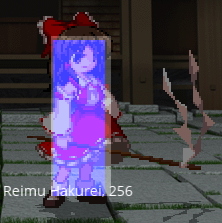 Capaz de hacer casi cualquier cosa.Esto es lo que sucede cuando no ingresas nada.
Agachado
Capaz de hacer casi cualquier cosa.Esto es lo que sucede cuando le das a 2.
Movimiento
Caminando
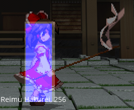 Se mueve en izquierda y derecha con 4 o 6.Dash
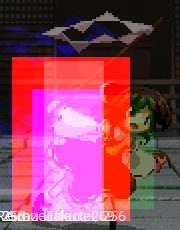 Si haces Dash con 66/6+z tendras graze e iras para adelante.Sirve para esquivar proyectiles.
Si haces Dash con 44/4+z tendras graze e iras para atras.
Salto
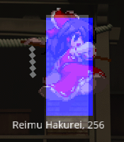 Simplemente salta y se mueve por el aire.Y se realiza simplemente con 7/8 y 9.
Super Salto
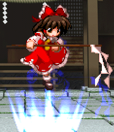 Salta y añade graze al personaje.Por lo tanto esquivas proyectiles con este movimiento que se ejecuta con 8+z.
Acción de Recuperación
Pasivo
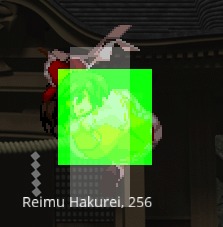 Este se recupera presionando A,B,C,X,Y o ZLevantarse
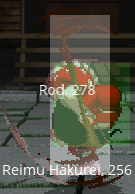 Se levanta automaticamente cuando esta tirado en el suelo y si no pierde toda su vida.Sistema
Sistema de Movimientos y Cartas
Barra de Danmaku y Calibre de Daño
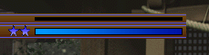 La barra de arriba sirve para ver cuanto es el daño limite de los personajes.Y la barra de abajo sirve para ver si tienes suficiente poder para lanzar tus ataques.
En cuanto a las estrellas, sirven para las bombas inicialmente siempre tienes 2.
Cards
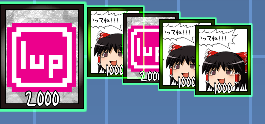 Hay cartas para activar y ejecutar System Card,Skill Card,Spell Card y Assistant Card, depende de tú deck.Declarar una Card
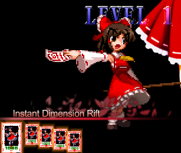 Cuando declaras una Card la Card se mantiene y la podras activar cuando quieras con "26Z".| P. ¿Y como declaro una Card? | |
|---|---|
| 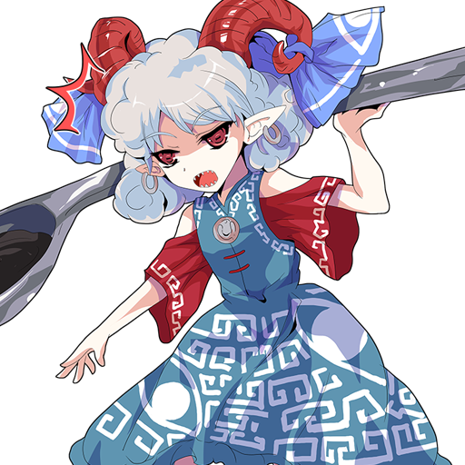 |
Pues se ejecuta con 22Z. Y si no sabes que significa el 22Z puedes resolverlo aquí. |
Declarar una Bomb
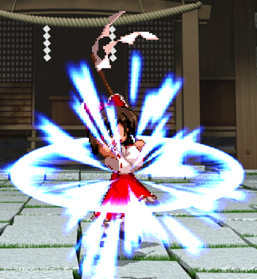 Cuando declaras una Card la Card se mantiene y la podras activar cuando quieras con "22C".| P. ¿Y como declaro una Bomb? | |
|---|---|
|
Pues se ejecuta con 22C y tienes de límite 2 Bombs. Y si no sabes que significa el 22C puedes resolverlo aquí. |
|